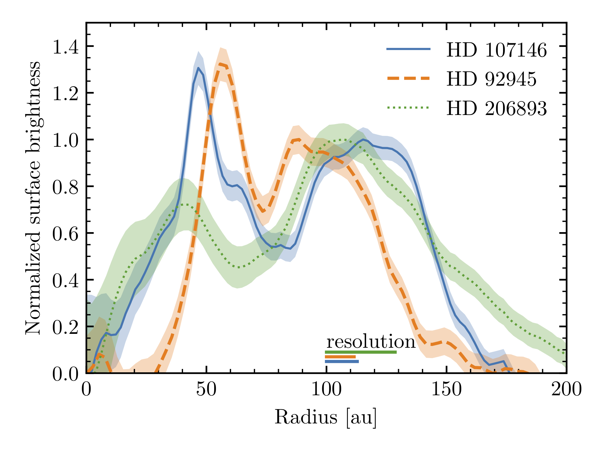

Planetary systems are not only composed of planets but also of tenuous dusty belts called debris discs that are generated by collisions of asteroids and comets, analogous to the asteroid and Kuiper belts in our own Solar System. Just like our Solar System's debris disc, the dust belts around other stars provide unique insights into the formation, architecture, and evolution of the underlying planetary systems, and can even be a key source of volatile delivery to Earth-like planets. Since my PhD, I have been doing research studying ExoKuiper belts, imaging them with ALMA to study their structure (see images above) and constrain their volatile composition, and using numerical simulations to model their interaction with planets. Below you can find a general description of different lines of research I have been pursuing in the last years.
Deprojecting ExoKuiper belts (Terrill et al. 2023)
In a project led by the former student James Terrill, we developed a method for deprojecting the emission of debris discs (even edge-on) and constraining their scale height (H) directly from ALMA visibilities using the package Frankenstein. The vertical thickness or H/r of debris discs is set by the dispersion of inclinations, and thus measuring H/r provides direct constraints on the dynamical excitation of the disc. We applied this method to a sample of debris discs observed with ALMA that sufficiently inclined allowing us to constrain H. The figure on the left shows the distribution of H/r vs their fractional width showing a wide diversity of excitations and widths. What process stirs the disc and creates this diversity is an open question.
The inner edge exoKuiper belts (Imaz-Blanco et al. 2023)

In a project led by the former student Amaia-Imaz Blanco, we looked at the inner edges of exoKuiper belts and examined whether the belts appear as sharply truncated by planets or smooth as collisional grinding would produce. Using ALMA data of 7 belts, we found that 4 have smooth inner edges consistent with collisional evolution and 3 have sharp inner edges that are indicative of some type of truncation. For the first group, we developed an analytical collisional model that can consrain the belt mass and maximum planetesimal size based on the observed inner edge location and dust surface density. We found that HR8799's belt only requires of 1cm-100m sized planetesimals, while the other three require larger 1km-sized or or larger planetesimals. The three belts with sharp inner edges indicate that they must have been truncated by planets or or something when they form. To remain with sharp edges, these belts require the presence of large planetesimals that have not yet collisionally evolved.
The vertical distribution of exocometary gas (Marino et al. 2022)
In 2022, I looked at the vertical evolution of exocometary gas (i.e. gas released in an exoKuiper belt). Previous studies had investigated how gas evolves radially, viscously spreads, photodissociates producing atomic species such as C and O, and how C can shield CO molecules from the interstellar UV. The latter effect is crucial as shielding by C is the only way we know how to explain the large amounts of CO around young A-type stars with exoKuiper belts. More importantly, for shielding to be effective C atoms and CO molecules must be vertically segragated with C occupying the upper layers and shielding the CO underneath. However, no one had examined how gas evolves vertically and whether this segregation is expected. I developed 1D vertical simulations to study the expected vertical distribution of CO and C and found that these will be vertically segregated only if vertical diffusion is weak. If the gas is turbulent, vertical diffusion will efficiently mix C and CO reducing the shielding efficiency. Finally, I found that observations of edge-on gas-rich exoKuiper belts with ALMA could show whether CO and C are vertically segregated or not as shown in the Figure on the left where the CO emission is shown in blue while the C emission is shown in orange contours.
Review on debris discs (Marino 2022)
In 2021, I was invited to give a lecture at the IAA Advanced School of Planetary Systems on debris discs and write a review chapter of the book "Planetary Systems Now" that resulted from this advanced school. In my chapter titled "Planetesimal/Debris discs", I reviewed some of the latest advancements in the study of debris discs with a particular focus on results from ALMA. Among many of them, I would like to highlight one in particular shown in the figure on the left. I compared the fractional width (i.e. the width of a belt divided by its central radius) of exoKuiper belts observed with ALMA (Matrà et al. in prep) and rings in protoplanetary discs. Two significant realisations came from this. First, exoKuiper belts are diverse with the majority of belts being wide (fractional width >0.5, median of ~0.7) and much wider than the Kuiper belt. Second, exoKuiper belts are much wider than rings in protoplanetary discs where we think planetesimals form. If exoKuiper belts truly form in these rings, this means that either the rings must migrate (see below, Miller et al. 2021), or exoKuiper belts have gaps which we have not resolved yet except in a few cases. ALMA high-resolution observations of wide belts should be able to answer this question.
ExoKuiper belt formation (Miller et al. 2021)
In 2021, in a project led by the student Elle Miller, we simulated the formation of exoKuiper belts in protoplanetary discs. The motivation of this project was that ALMA observations have revealed that the majority of exoKuiper belts are wide, spanning tens of au, whereas the rings in protoplanetary discs where we think planetesimals form are very narrow. Using dust-coagulation simulations, Elle showed that this difference could be naturally explained if rings migrate leading to the formation of planetesimals at different radii and epochs. Thus the widths of exoKuiper belts tell us something about the migration of those dust rings/traps. The figure on the left shows the width and radius of exoKuiper belts around Solar-type stars as constrained by ALMA observations (blue) and the width and radius obtained in simulations (orange squares). In order to reproduce the width of 50~au, rings must migrate at 5 au/Myr. If the rings are caused by planets undergoing type II migration, then the viscosity must be larger than ~4e-4 in order to migrate enough distance over the age of the protoplanetary disk (~10Myr). See Miller, Marino et al. (2021) for more details.
Orbital stirring (Marino 2021)
In 2021, I showed how by measuring how smooth or sharp is the outer edge of a exoKuiper belt, we can constrain how excited are the orbits of planetesimals. The sharper a radial structure is, the lower the dispersion of eccentricities must be. Using ALMA observations of five discs and a parmetric model inspired by numerical simulations, I constrained the dispersion of eccentricities of five discs (shown by coloured ellipses in the Figure on the left). The results indicate that the belts around HD 107146, HD92945 and AU Mic have low eccentricities consistent with stirring done by Pluto-sized objects. On the other hand, the outer edges of HR 8799 and HD206893 are very smooth indicating high eccentricities. These high eccentricities could have been attained by interactions with the known giant planets orbiting interior to these belts (Marino 2021).
Radial substructure (Marino et al. 2018a, 2019, 2020b)
Over the last years, I have used ALMA to image at high resolution multiple exoKuiper belts to search for evidence of annular substructure. In some of these systems, I have found so-called gaps— annular regions that are depleted of dust (see Figure on the right). These gaps are the smoking gun of planets, which through gravitational interactions can clear broad regions of debris, producing these gaps. Such planets could have orbits inside these gaps, or closer to the star and open these gaps through long-distance interactions. Understanding the morphology and ubiquity of these gaps can help to constrain the orbits, masses and frequency of these planets (Marino et al. 2018a, 2019, 2020c).
Exocometary gas (Marino et al. 2020a)
Collisions between large bodies do not only release dust, but also volatile species that were trapped in the interiors of icy planetesimals. These planetesimals are analogous to comets in the solar system and form in the cold and distant regions of protoplanetary discs. At very low temperatures gaseous species tend to freeze in the surfaces of tiny solid particles that grow to form km-sized exocomets. As a protoplanetary disc disperses the stellar light is no longer blocked and thus can heat these volatile-rich exocomets. Energetic collisions between exocomets fracture their internal structure, allowing the escape of gases such as CO. Thanks to the unique sensitivity of ALMA, I have been able to detect the faint emission of some of these volatile species, opening a new window to study the composition of exocomets. I have also studied the evolution of the released gas using population synthesis models (see figure on the left) to constrain how fast these gases spread around planetary systems.
Inward scattering of exocomets and volatile delivery (Marino et al. 2018b)
If unperturbed, exocomets will tend to remain in almost circular orbits at tens of au for billions of years. However, gravitational perturbations from planets can scatter exocomets, putting them on highly eccentric orbits and that can reach the inner regions of planetary systems. During my PhD, I became fascinated by the idea of how a chain of planets could sequentially scatter exocomets to smaller and smaller radii (see figure on the left). This process is very common in the Solar System where comets that originated in the Kuiper belt are passed from Neptune down to Jupiter. A fraction of these exocomets could impact on Earth analogues and deliver volatiles that are crucial for the development of life. I have worked modelling this process and investigated which types of planetary systems are better suited for scattering exocomets inwards to be delivered to inner planets (Marino et al. 2018b).
There is growing evidence that this is process could be happening or have happened in a large fraction of exoplanetary systems. For example, in some systems outgassed species are seen to pass in front of stars producing variable absorption lines (Rebollido et al. 2020). In other systems, we sometimes see gas released from exocomets interior to exoKuiper belts (Marino et al. 2017), far away from where they formed. This suggests exocomets experience multiple encounters with planets that allowed them to reach the inner regions.